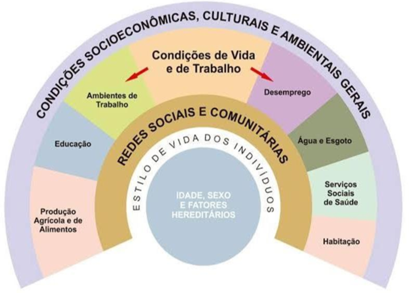
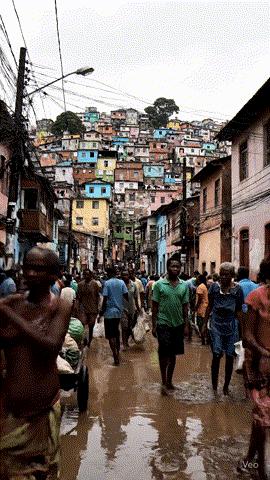

Apresentação da Unidade
Olá, estudante-trabalhador! Seja bem-vindo!
Nesta Unidade, exploraremos os diferentes tipos de violência presentes no sistema prisional e seus efeitos na saúde e na dignidade dos indivíduos, além do papel fundamental das políticas públicas na prevenção dessa violência. Abordaremos também estratégias educacionais e de mediação de conflitos que promovem um ambiente mais humanizado e apresentaremos experiências nacionais e internacionais bem-sucedidas.
Convidamos você, estudante-trabalhador, a refletir sobre esses temas e a aprofundar seus conhecimentos, reconhecendo a importância da ética, da cidadania e da justiça social na construção de soluções para essa realidade.
Objetivos de Aprendizagem da Unidade
Reconhecer a violência na sociedade e no contexto familiar;
Compreender os efeitos da violência, tanto institucional quanto externa, na saúde das pessoas privadas de liberdade;
Conhecer as políticas públicas de prevenção da violência;
Identificar as formas e tipos de violência presentes no sistema prisional;
Reconhecer medidas de prevenção à violência e mediação de conflitos com abordagem centrada na pessoa e no respeito aos direitos humanos.
Carga Horária de Estudo: 5 horas
1.1 Violência, sistema prisional e direitos humanos
A violência é um fenômeno complexo e multifacetado. Você já parou para pensar sobre quantas formas diferentes a violência pode assumir?
Segundo Krug et al. (2002), a violência pode ser entendida como o uso intencional da força ou do poder, seja de forma real, seja sob a forma de ameaça, contra si mesmo, outra pessoa, um grupo ou uma comunidade. Essa ação pode resultar, ou ter o potencial de resultar, em lesão, morte, danos psicológicos, problemas no desenvolvimento ou privação de direitos.
1.1.1 A violência na história do Brasil
Quando olhamos para a história do Brasil, percebemos que a violência sempre esteve presente, desde o período colonial até os dias de hoje. Desde a colonização, o Brasil é marcado por relações desiguais de poder. A violência foi utilizada para subjugar povos indígenas, escravizar africanos e consolidar a exploração econômica. O sistema escravocrata, que perdurou por mais de 300 anos, deixou marcas profundas na sociedade, perpetuando desigualdades e marginalizando grande parte da população.
Alguns autores destacam que a violência foi uma ferramenta utilizada para manter o poder e a ordem, o que gerou desigualdade social e aprofundou o racismo. Essas marcas históricas ainda estão presentes em nossa sociedade (Holanda, 1995; Freyre, 2003; Fernandes, 1978).
O Brasil cresceu territorial e economicamente, mas esse avanço não veio acompanhado de uma distribuição justa de oportunidades. A desigualdade social e racial permaneceu, afetando principalmente a população negra e periférica, o que contribuiu para o aumento da criminalidade e do número de pessoas privadas de liberdade (PPL).
O país tem um dos maiores sistemas prisionais do mundo, com um aprisionamento em massa que reflete a exclusão social histórica. A maioria das PPL vem de contextos de vulnerabilidade, com pouco acesso à educação e ao mercado de trabalho, reforçando um ciclo difícil de romper.
Você já percebeu como a violência e a insegurança se manifestam no seu dia a dia?
Insegurança e violência não são sinônimos, embora estejam profundamente relacionadas. A insegurança é a sensação de ameaça constante, o medo de que algo ruim possa acontecer e essa sensação muitas vezes se alimenta de estereótipos e preconceitos, como o racismo estrutural, que transforma determinadas pessoas em “criminosos em potencial”. Já a violência é a manifestação concreta desse medo em ações e estruturas: pode ser física, simbólica ou institucional. Isso pode aparecer de várias formas:
Clique para interagir
Quando confundimos violência com insegurança, corremos o risco de legitimar respostas cruéis, como o endurecimento penal, sem enfrentar as verdadeiras causas da violência. A violência vai além da agressão física. Ela também afeta a saúde mental e as relações interpessoais. Em muitos casos, pode levar à insegurança na própria família.
1.1.2 O sistema prisional e os direitos humanos
Segundo a corporação britânica de rádio difusão (BBC, 2024), o Brasil tem uma das maiores populações prisionais do mundo, mas o sistema prisional realmente cumpre seu papel de ressocialização? Quem são as pessoas que estão privadas de liberdade e por quais motivos? Dados da matéria apontam que as PPL, em sua maioria, são jovens, negros e de baixa renda, evidenciando um padrão social que reflete a desigualdade histórica do país.
Os direitos humanos são garantidos a todas as pessoas, inclusive às que estão privadas de liberdade. No entanto, o Conectas Direitos Humanos (2024), organização não governamental brasileira focada na manutenção dos direitos humanos, aponta que a realidade do sistema prisional é de superlotação, violência e falta de condições mínimas de dignidade. Diante do cenário brasileiro, o Supremo Tribunal Federal (STF) reconheceu, em 2023, a Arguição de Descumprimento de Preceito Fundamental (ADPF 347/DF), instrumento jurídico usado para contestar atos do poder público que violem preceitos essenciais da Constituição, a existência de um Estado de Coisas Inconstitucional (ECI) (Brasil, 2023). Isso significa que o funcionamento e a estrutura do sistema prisional violam de forma persistente e generalizada direitos fundamentais, como a integridade física, a saúde e a dignidade humana, exigindo do Estado medidas urgentes e estruturais para reverter esse quadro.
Isso gera um ciclo de violência que afeta não apenas as PPL, mas toda a sociedade. Afinal, como podemos esperar que uma pessoa saia do sistema prisional melhor do que entrou se o ambiente é desumano?
Fica evidente que a violência no sistema prisional é reflexo da violência estrutural e histórica do país. Para compreender melhor essa dinâmica, podemos classificar a violência nesse contexto em diferentes tipos, conforme apresentado no Quadro 1.
Quadro 1 - Classificando as diferentes formas de violência: institucional e interpessoal
| Tipo de Violência | Descrição |
|---|---|
| Violência Pregressa | Atos de violência que a população privada de liberdade sofreu ou cometeu antes do aprisionamento. |
| Violência Institucional | Atos de violência cometidos pelo Estado no sistema prisional por meio de funcionários da instituição. Pode incluir abusos físicos, psicológicos e estruturais, sendo passível de multa e detenção de 3 meses a 1 ano. |
| Violência Interpessoal | Atos de violência que acontecem nas instituições penais entre as pessoas presas envolvendo conflitos pessoais que resultam em agressões físicas. |
Dessa forma, é possível perceber que a violência no sistema prisional não é um fenômeno isolado, mas um reflexo das desigualdades estruturais da sociedade. O aprisionamento em massa de pessoas em situação de vulnerabilidade social demonstra a relação entre a violência e os fatores socioeconômicos. Isso nos leva a outro ponto essencial para a compreensão desse cenário: os determinantes sociais da saúde, que afetam diretamente a qualidade de vida da população, incluindo aqueles privados de liberdade.
A Lei nº 8.080 (Brasil, 1990) definiu a saúde como um direito fundamental do ser humano e dever do Estado, que deve garantir, por meio de políticas públicas, a promoção, proteção e recuperação da saúde de qualquer indivíduo de forma igualitária, ressaltando a equidade.
Um conceito crucial para a compreensão da necessidade da equidade como princípio e fundamento pilar do Sistema Único de Saúde (SUS) é o de Determinante Social da Saúde (DSS). Os primeiros a definir os DSS foram Dahlgren e Whitehead em 1991 (apud Buss; Pellegrini, 2007) (Figura 1), estabelecendo-os como fatores socioeconômicos, culturais e ambientais que influenciam diretamente a condição de vida das pessoas, como habitação, saneamento, ambiente, trabalho, educação, além dos fatores individuais. Na saúde coletiva, o território não é apenas um espaço físico delimitado, mas um espaço vivido e construído por relações sociais, econômicas, culturais e políticas. Ele reflete desigualdades, acessos e vulnerabilidades que interferem diretamente nos DSS.
Essas características afetam diretamente o acesso à saúde e as formas de adoecimento. A Organização Mundial da Saúde (OMS) adere ao conceito, confirmando sua relação com as principais iniquidades em saúde (Fiocruz, 2020).

Fonte: Dahlgren e Whitehead (1991 apud Buss; Pellegrini, 2007).No entanto, a realidade do sistema prisional é bem diferente, caracterizando-se por um ambiente insalubre, frequentemente tema de discussão por violar diversos direitos humanos, incluindo o direito à saúde. Essa população é acometida por várias doenças em decorrência do ambiente em que está inserida. A tríade confinamento, insalubridade e superlotação, por exemplo, contribui para o surgimento e agravamento de doenças infecciosas, agudas e crônicas, além de agravos em saúde mental e doenças, como as cardiovasculares. Tuberculose, infecções sexualmente transmissíveis (ISTs) e hanseníase são exemplos de enfermidades que tornam os estabelecimentos penais uma urgência em saúde pública. Nesse sentido, a Declaração de Moscou sobre Saúde Prisional, elaborada pela OMS (World Health Organization, 2003), reforça que a saúde nos estabelecimentos penais é parte integrante da saúde pública e que a negligência nesse ambiente compromete toda a sociedade. O documento destaca ainda a necessidade de articulação entre os sistemas de saúde dentro e fora dos estabelecimentos penais, reafirmando que o direito à saúde deve ser assegurado a todas as pessoas, inclusive àquelas privadas de liberdade.
Nesse contexto, surge a necessidade de políticas públicas que não apenas garantam direitos, mas promovam um sistema prisional menos punitivo e mais voltado para a reintegração social. Höfling (2001) define as políticas sociais como políticas responsáveis pela redistribuição de benefícios sociais, visando à redução das desigualdades estruturais. No entanto, como aponta Cardoso (2009), o sistema prisional brasileiro prioriza a punição do delito em detrimento da reintegração, ignorando a necessidade de contemplar essa população nas políticas sociais.
É interessante destacar que, segundo Oliveira e Lopes (2025), há uma diferenciação entre ressocialização e reintegração social: a ressocialização refere-se ao processo pelo qual o indivíduo reconstrói sua capacidade de conviver socialmente, enquanto a reintegração diz respeito à inserção efetiva do indivíduo na sociedade após cumprir a pena. Essa distinção evidencia que políticas públicas voltadas para o sistema prisional devem ir além da simples manutenção de direitos, promovendo medidas que não só preparem o indivíduo para a vida social (ressocialização), mas também garantam sua participação plena na sociedade (reintegração).
Para transformar essa realidade, é fundamental que as políticas públicas promovam a qualificação das equipes que atuam diretamente com essa população, na ampliação do acesso à saúde e à educação e na revisão da estrutura do sistema prisional. A ética e a justiça social devem caminhar juntas para que o país seja mais justo e equitativo.
O Conselho Nacional do Ministério Público define cidadania como o vínculo entre o indivíduo e o Estado (2015), que estabelece direitos e deveres políticos e civis. Com a população privada de liberdade, o Estado tem a obrigação de garantir os demais direitos fundamentais, embora o direito de ir e vir esteja temporariamente suspenso. Cabe à equipe prisional zelar pela integridade física e moral das PPL.
Entretanto, como mencionado anteriormente, o sistema prisional brasileiro não cumpre plenamente as condições previstas na Lei de Execução Penal (LEP), Lei nº 7.210 (Brasil, 1984). A superlotação e a violação dos direitos humanos são recorrentes, gerando revolta entre as PPL. Machado e Guimarães (2014) apontam que essa insatisfação tem como consequência um novo ciclo de violência, reforçando a necessidade urgente de reforma do sistema prisional para que ele cumpra seu papel ressocializador, em vez de apenas punir.
Clique para interagir
Assis (2007) faz uma análise ainda mais crítica, destacando que, apesar da igualdade ser um princípio constitucional, a realidade prisional demonstra o contrário: a maioria das PPL é composta por indivíduos das classes mais baixas e historicamente marginalizados.
Segundo dados do SISDEPEN (Brasil, 2024), no primeiro semestre de 2024, 68,9% das PPL era negra ou parda. Além disso, apenas 82,3% das pessoas tiveram seu dado cor de pele/raça/etnia preenchido, o que também mostra a necessidade de o sistema prisional atentar para esses dados, pois a incompletude já pode ser vista como um dado para análise. Esse dado reforça a importância de discutir os DSS, que não influenciam nem determinam diretamente o aprisionamento em si, mas ajudam a compreender as taxas, características e desigualdades do aprisionamento no Brasil, como, por exemplo, quem é mais afetado, em que contexto e de que maneira.
A pesquisa de Sapori, Santos e Maas (2017) sobre o perfil dos egressos em Minas Gerais revelou que, em sua maioria, são jovens, pardos e com baixa escolaridade.
Ainda segundo o SISDEPEN, no primeiro semestre de 2024, 76,92% das PPL não haviam concluído o ensino básico. Esses números evidenciam a importância de promover ações socioeducativas nos estabelecimentos penais e de aumentar os investimentos na educação. O Decreto nº 7.626 (Brasil, 2011) instituiu o Plano Estratégico de Educação no Sistema Prisional, visando à qualificação profissional das PPL para que, ao serem libertadas, tivessem mais oportunidades no mercado de trabalho, contribuindo para o caráter ressocializador do sistema.
A busca pela manutenção dos vínculos familiares é relevante para a saúde mental, como revela a revisão sistemática de Roberts et al. (2017) ao destacar os efeitos positivos das intervenções familiares no contexto prisional.
Esses vínculos são mantidos, em grande medida, pelos esforços dos próprios familiares nas visitas a seus entes em situação de prisão. No entanto, Gomes, Ribeiro e Miranda (2024) apontam que essas visitas nem sempre ocorrem de forma respeitosa e segura, havendo denúncias de abusos e assédios cometidos por policiais penais contra familiares. Pereira, Santos e Santos (2024) destacam que, diante das fragilidades institucionais, os familiares costumam recorrer a redes informais de apoio, compostas por outras pessoas que vivem a mesma realidade. Nos depoimentos, emergem sentimentos como “cansaço”, diante das dificuldades enfrentadas para obter senhas e lidar com os inúmeros obstáculos relacionados ao direito à visitação. Nesse sentido, diferentes estudos (Pereira; Santos; Santos, 2024; Calicchio, 2019; Lermen, 2022) evidenciam as limitações das políticas públicas em promover e facilitar o fortalecimento dos laços familiares no contexto prisional.
É importante considerar também que policiais penais estão frequentemente submetidos a condições precárias de trabalho, o que pode afetar sua saúde mental e interferir na qualidade das interações com familiares e PPL.
Um estudo comparativo de Fonseca et al. (2024) aponta países como a Noruega como exemplo de boas práticas no sistema prisional, com taxas de reincidência inferiores a 20%. De fato, o modelo norueguês se destaca por priorizar a reintegração social, com infraestrutura adequada, acesso à educação, apoio psicológico e oportunidades de trabalho. No entanto, é importante reconhecer que os resultados não podem ser atribuídos exclusivamente ao modelo prisional em si, mas também às condições sociais mais amplas. Como argumenta Wacquant (2001) em As Prisões da Miséria, o sistema prisional é apenas um dos elementos envolvidos na produção e no controle da criminalidade e, em muitos contextos, ele ganha um protagonismo desproporcional em relação às políticas públicas.
O caso brasileiro exemplifica isso: o aprisionamento em massa está profundamente relacionado à criminalização da pobreza e à chamada guerra às drogas, que seleciona corpos e territórios marcados pela desigualdade racial e social. Assim, pensar em uma reforma do sistema prisional exige também enfrentar as raízes estruturais da violência e do crime, que vão muito além dos muros dos estabelecimentos penais.

Você já parou para pensar por que algumas regiões enfrentam mais violência do que outras? Que fatores sociais e econômicos estão por trás dessa realidade?
É importante compreender que o planejamento de políticas públicas voltadas à prevenção da violência precisa contemplar muito mais que o reforço policial. Ele exige uma análise racional e profunda das causas da insegurança.
Reflexão
Como a fome, a pobreza e o desemprego contribuem para o aumento da violência? E mais - como garantir que a prevenção passe também pelo acesso à educação, à moradia e à saúde pública de qualidade?
A complexidade desse problema está justamente na intersecção desses fatores. Por isso, discutir segurança pública implica também falar sobre justiça social. A reforma do sistema prisional, por exemplo, só será eficaz se vier acompanhada de medidas que assegurem condições de vida dignas para quem cumpre suas penas. Essa abordagem mais ampla pode ser decisiva para reduzir os índices de reincidência criminal.
1.2 Políticas públicas para enfrentamento da violência
A violência é um problema que afeta toda a sociedade, com implicações diretas na segurança, nos direitos humanos, na saúde, na educação e no desenvolvimento social. Para combatê-la de maneira eficaz, é essencial que existam políticas públicas que atuem tanto na prevenção quanto na punição e ressocialização.
Aqui vamos explorar algumas estratégias e iniciativas utilizadas para enfrentar a violência, incentivando a reflexão sobre o papel do Estado e da sociedade nesse processo.
1.2.1 Estratégias de prevenção da violência
As políticas públicas de prevenção da violência devem ser baseadas na identificação dos fatores de risco e na implementação de estratégias educativas, sociais e culturais. Veja no Quadro 2 o que as políticas públicas de prevenção da violência devem contemplar.
Quadro 1 - Classificando as diferentes formas de violência: institucional e interpessoal
Clique para interagir
Objetivo:
Reduzir desigualdades, oferecendo educação, capacitação profissional, cultura e
lazer.
Exemplo de ação relacionada:
Movimento
Todos pela Educação
Trabalha para garantir educação de qualidade para todos, combatendo a desigualdade
social
e promovendo inclusão. A
educação é um dos fatores-chave para prevenir a violência a longo prazo.
Objetivo:
Apoiar famílias e criar programas de orientação e prevenção da violência infantil.
Atuar diretamente na redução de comportamentos violentos nas gerações futuras com a
realização de campanhas de
conscientização para a prevenção do abuso e negligência infantil.
Exemplo de ação relacionada:
Programa
Fica Vivo!
Criado para prevenir homicídios entre jovens em áreas de vulnerabilidade, oferece
atividades culturais, esportivas e
profissionalizantes para afastá-los da criminalidade.
Objetivo:
Ensinar direitos humanos, resolução de conflitos e empatia nas escolas, além de
promover
o espaço escolar como um lugar
de cultura pacificadora.
Exemplo de ação relacionada:
Escola Aberta
Abre escolas nos fins de semana para oferecer atividades culturais e esportivas,
promovendo a convivência pacífica e
fortalecendo a comunidade escolar.
1.2.2 Políticas de combate à violência
Além das ações preventivas, é fundamental que o sistema de segurança pública e a justiça sejam fortalecidos para garantir a responsabilização dos agressores e a proteção das vítimas.
O Quadro 3 apresenta algumas experiências e propostas como possibilidades de enfrentamento da violência. É importante destacar que essas ações não se encerram nas sugestões indicadas, uma vez que o tema é complexo e nem mesmo entre especialistas em segurança pública há consenso sobre as estratégias mais eficazes.
Também é necessário considerar a inclusão do SUS nessas políticas. O SUS desempenha um papel fundamental tanto no acolhimento e cuidado das vítimas quanto na prevenção de novos episódios de violência por meio da Atenção Primária à Saúde (APS), da saúde mental (Centros de Atenção Psicossocial – CAPS – com apoio psicológico e acompanhamento de vítimas em sofrimento emocional) e das notificações compulsórias, que podem contribuir para a formulação de políticas mais eficazes.
Quadro 3 - Programas e medidas de enfrentamento da violência e proteção das vítimas
Clique para interagir
Objetivo:
Criar delegacias especializadas, centros de referência e abrigos. Esses serviços
devem garantir segurança, acolhimento,
orientação jurídica e psicossocial, promovendo a recuperação e a autonomia das
vítimas.
Confira ações relacionadas:
Rede
de Atendimento às Mulheres em Situação de Violência
Serviço público que reúne ações e serviços das áreas de assistência social,
justiça,
segurança pública e saúde para
apoiar mulheres em situação de violência.
Objetivo:
Capacitar agentes e ampliar o policiamento comunitário e as tecnologias de
monitoramento.
Confira ações relacionadas:
Programa Mulher Segura e
Protegida
Desenvolvido para ampliar serviços de proteção a mulheres vítimas de violência
em parceria com governos estaduais e municipais.
Objetivo:
Agilizar processos, garantir medidas protetivas e punir agressores, além de
investir
em sistemas que facilitem o
acompanhamento dos processos e que garantam que a justiça chegue rapidamente aos
casos de violência.
Confira ações relacionadas:
Relatório:
O
Poder Judiciário no Enfrentamento à Violência Doméstica e Familiar contra as
Mulheres
Iniciativa conjunta do Conselho Nacional de Justiça (CNJ) e do Instituto de
Pesquisa
Econômica Aplicada (Ipea) para
aprimorar a atuação do Poder Judiciário no atendimento integral e
multidisciplinar a
mulheres vítimas de violência
doméstica e familiar.
Para que a violência seja efetivamente enfrentada, é preciso também pensar em políticas de reabilitação e reintegração daqueles que cometeram atos violentos. Nesse sentido, é interessante destacar alguns projetos e estratégias de inclusão social de pessoas egressas do sistema prisional, conforme Quadro 4.
Quadro 4 - Programas e iniciativas para reintegração social de egressos do sistema prisional
Clique para interagir
Objetivo:
Oferecer oportunidades para mudança de vida.
Confira ações relacionadas:
Projeto Começar de Novo
Incentiva a contratação de pessoas que cumpriram pena para facilitar a
reintegração
social e reduzir a reincidência
criminal.
Programa
Novos
Caminhos
Oferece capacitação profissional para egressos do sistema prisional, com foco na
reintegração ao mercado de trabalho.
Objetivo:
Ajudar na reabilitação emocional e social.
Confira ações relacionadas:
Instituto Recomeçar
Organização social que atua com o objetivo de reintegrar à sociedade homens e
mulheres egressos do sistema prisional com
diferentes tipos de suporte.
A implementação dessas políticas públicas requer o envolvimento de toda a sociedade, com destaque para a participação da sociedade civil organizada. Movimentos sociais, Organizações Não Governamentais (ONGs), lideranças comunitárias e outros atores são fundamentais não só na elaboração e implementação de programas, mas também na fiscalização e cobrança de resultados. A parceria entre governo e sociedade fortalece a legitimidade das ações e amplia seu alcance.
No SUS, essa participação se concretiza principalmente por meio dos Conselhos e Conferências de Saúde, espaços em que usuários, profissionais, prestadores e gestores debatem, fiscalizam e propõem melhorias nas políticas públicas. Além dessas instâncias formais, a população também pode se engajar por meio de ouvidorias, consultas públicas, movimentos sociais e atividades de educação popular em saúde, fortalecendo o controle social e a democracia participativa.
Esse protagonismo da sociedade é ainda mais necessário no contexto do sistema prisional. A Política Nacional de Atenção Integral à Saúde das Pessoas Privadas de Liberdade no Sistema Prisional (PNAISP) prevê a participação ativa de PPL, familiares e trabalhadores prisionais nas ações de saúde. Garantir esse envolvimento é fundamental para promover o acesso ao SUS, combater desigualdades e ampliar a cidadania durante a privação de liberdade.
A participação social, portanto, não é apenas um direito, mas uma ferramenta estratégica na construção de políticas públicas mais justas, inclusivas e efetivas, especialmente nos contextos de maior vulnerabilidade.
1.2.5 Ações interinstitucionais
O enfrentamento da violência exige ações articuladas entre diferentes áreas do governo, como saúde, educação, assistência social, segurança pública, justiça e cultura. A integração dessas políticas facilita o atendimento integral às vítimas e a atuação governamental mais eficaz na resolução dos problemas estruturais que geram a violência.
Referências importantes
CALICCHIO, M. G. M. S. Além das Celas: experiência de mulheres com familiar em cumprimento de pena em regime fechado, Mato Grosso. Tese (Doutorado em Saúde Coletiva) - Programa de Pós-Graduação em Saúde Coletiva, Universidade Federal de Mato Grosso, Cuiabá, 2019.
CARDOSO, M. C. V. As assistências previstas na Lei de Execução Penal: uma tentativa de inclusão social do apenado. SER Social, v. 11, n. 24, p. 106-128, 2009. Disponível em: https://periodicos.unb.br/index.php/SER_Social/article/view/12746(opens in a new tab). Acesso em: 1 set. 2025.
CONECTAS DIREITOS HUMANOS. Regras de Mandela: os problemas do sistema carcerário brasileiro. São Paulo: Conectas, 18 jul. 2024. Disponível em: https://conectas.org/noticias/regras-de-mandela-os-problemas-do-sistema-carcerario-brasileiro/. Acesso em: 22 ago. 2025.
MACHADO, N. O.; GUIMARÃES, I. S. A realidade do sistema prisional brasileiro e o princípio da dignidade da pessoa humana. Revista Eletrônica de Iniciação Científica, v. 5, n. 1, p. 566-581, 2014. Disponível em: https://www.univali.br/graduacao/direito-itajai/publicacoes/revista-de-iniciacao-cientifica-ricc/edicoes/Lists/Artigos/Attachments/1008/Arquivo%2030.pdf. Acesso em: 5 ago. 2025.
Referências
ASSIS, R. D. A realidade atual do sistema penitenciário brasileiro. Revista CEJ, v. 11, n. 39, p. 74-78, 2007. Disponível em: https://revistacej.cjf.jus.br/cej/index.php/revcej/article/view/949 . Acesso em: 5 ago. 2025.
BBC. Presos no Brasil: 96% homens, 48% pardos, 30% sem julgamento: o perfil dos detentos no Brasil. BBC News Brasil, 17 out. 2024. Disponível em: https://www.bbc.com/portuguese/articles/c0k4nmd3e2xo . Acesso em: 1 set. 2025.
BRASIL. Secretaria Nacional de Políticas Penais. Relatório de Informações Penais. 16º ciclo SISDEPEN, 1º semestre de 2024. RELIPEN. Brasília: SENAPPEN, 2024. Disponível em: https://www.gov.br/senappen/pt-br/servicos/sisdepen/relatorios/relipen/relipen-1o-semestre-de-2024.pdf . Acesso em: 1 set. 2025.
BRASIL. Plano Nacional para o Enfrentamento do Estado de Coisas Inconstitucional nas Prisões Brasileiras - Pena Justa. ADPF 347/DF. gov.br, 2023. Disponível em: https://www.gov.br/mj/pt-br/assuntos/sua-seguranca/seguranca-publica/pena-justa . Acesso em: 16 ago. 2025.
BRASIL. Conselho Nacional do Ministério Público (CNMP). Cidadania. c2015. Disponível em: https://www.cnmp.mp.br/portal/institucional/476-glossario/8144-cidadania . Acesso em: 1 set. 2025.
BRASIL. Decreto nº 7.626, de 24 de novembro de 2011. Institui o Plano Estratégico de Educação no âmbito do Sistema Prisional. Diário Oficial da União, Brasília, DF, 25 nov. 2011. Disponível em: https://www.planalto.gov.br/ccivil_03/_ato2011-2014/2011/decreto/d7626.htm . Acesso em: 5 ago. 2025.
BRASIL. Decreto nº 592, de 6 de julho de 1992. Atos internacionais. Pacto Internacional sobre Direitos Civis e Políticos. Promulgação. Diário Oficial da União, Brasília, DF, 7 jul. 1992. Disponível em: https://www.planalto.gov.br/ccivil_03/decreto/1990-1994/d0592.htm . Acesso em: 5 ago. 2025.
BRASIL. Lei nº 8.080, de 19 de setembro de 1990. Dispõe sobre as condições para a promoção, proteção e recuperação da saúde, a organização e o funcionamento dos serviços correspondentes e dá outras providências. Diário Oficial da União, Brasília, DF, 20 set. 1990. Disponível em: https://www.planalto.gov.br/ccivil_03/leis/l8080.htm . Acesso em: 5 ago. 2025.
BRASIL. Lei nº 7.210, de 11 de julho de 1984. Lei de Execução Penal. Diário Oficial da União, Brasília, DF, 13 jul. 1984. Disponível em: http://www.planalto.gov.br/ccivil_03/leis/l7210.htm . Acesso em: 24 jul. 2025.
BUSS, P. M.; PELLEGRINI FILHO, A. A saúde e seus Determinantes Sociais. Physis: Revista de Saúde Coletiva, v. 17, n. 1, p. 77-93, 2007. Disponível em: https://www.scielo.br/j/physis/a/msNmfGf74RqZsbpKYXxNKhm/?format=pdf&lang=pt . Acesso em: 5 ago. 2025.
CALICCHIO, M. G. M. S. Além das Celas: experiência de mulheres com familiar em cumprimento de pena em regime fechado, Mato Grosso. Tese (Doutorado em Saúde Coletiva) - Programa de Pós-Graduação em Saúde Coletiva, Universidade Federal de Mato Grosso, Cuiabá, 2019.
CARDOSO, M. C. V. As assistências previstas na Lei de Execução Penal: uma tentativa de inclusão social do apenado. SER Social, v. 11, n. 24, p. 106-128, 2009. Disponível em: https://periodicos.unb.br/index.php/SER_Social/article/view/12746 . Acesso em: 1 set. 2025.
CONECTAS DIREITOS HUMANOS. Regras de Mandela: os problemas do sistema carcerário brasileiro. São Paulo: Conectas, 18 jul. 2024. Disponível em: https://conectas.org/noticias/regras-de-mandela-os-problemas-do-sistema-carcerario-brasileiro/ . Acesso em: 22 ago. 2025.
FERNANDES, F. A integração do negro na sociedade de classes. São Paulo: Ática, 1978. 2 v.
FIOCRUZ. Os DSS na OMS. Portal DSSBR, c2020. Disponível em: https://dssbr.ensp.fiocruz.br/dss-o-que-e/os-dss-na-oms/ . Acesso em: 1 set. 2025.
FONSECA, R. R. et al. Como a organização do sistema prisional influencia na taxa de ressocialização: uma comparação entre Brasil e Noruega. Jornal Eletrônico Faculdades Integradas Vianna Júnior, v. 16, n. 1, p. 70-90, 2024. Disponível em: https://www.jornaleletronicofivj.com.br/jefvj/article/view/932 . Acesso em: 1 set. 2025.
FREYRE, G. Casa-grande & senzala: formação da família brasileira sob o regime da economia patriarcal. 48. ed. Rio de Janeiro: Record, 2003.
GOMES, M. E. R C.; RIBEIRO, L. M. L.; MIRANDA, G. G. R. "Todo homem precisa de uma mãe", mas nem todo merece uma: o cuidado em notícias sobre o sistema penitenciário mineiro. Sexualidad, Salud y Sociedad, n. 40, e22203, 2024. Disponível em: https://www.scielo.br/j/sess/a/QrBk7TvLt65yq3Z58Vmvr9H/ . Acesso em: 5 ago. 2025.
HÖFLING, E. M. Estado e políticas (públicas) sociais. Cadernos CEDES, v. 21, n. 55, p. 30-41, 2001. Disponível em: https://www.scielo.br/j/ccedes/a/pqNtQNWnT6B98Lgjpc5YsHq/?format=html&lang=pt . Acesso em: 5 ago. 2025.
HOLANDA, S. B. Raízes do Brasil. 26. ed. São Paulo: Companhia das Letras, 1995.
KRUG, E. G. et al. (org.). Relatório mundial sobre violência e saúde. Genebra: Organização Mundial da Saúde, 2002. Disponível em: https://portaldeboaspraticas.iff.fiocruz.br/biblioteca/relatorio-mundial-sobre-violencia-e-saude/ . Acesso em: 5 ago. 2025.
LERMEN, H. S. Preso tem família: sofrimentos e resistências de familiares de encarcerados ao longo de um ano de pandemia. Cadernos Ibero-Americanos de Direito Sanitário, v. 11, n. 2, p. 71-87, 2022. Disponível em: https://pesquisa.bvsalud.org/portal/resource/pt/biblio-1377954 Acesso em: 1 set. 2025.
MACHADO, N. O.; GUIMARÃES, I. S. A realidade do sistema prisional brasileiro e o princípio da dignidade da pessoa humana. Revista Eletrônica de Iniciação Científica, v. 5, n. 1, p. 566-581, 2014. Disponível em: https://www.univali.br/graduacao/direito-itajai/publicacoes/revista-de-iniciacao-cientifica-ricc/edicoes/Lists/Artigos/Attachments/1008/Arquivo%2030.pdf Acesso em: 5 ago. 2025.
MINAYO, M. . S.; CONSTANTINO, P. (org.). Deserdados Sociais: condições de vida e saúde dos presos do estado. Rio de Janeiro: Fiocruz, 2015.
OLIVEIRA, H. K. P.; LOPES, J. A. B. Ressocialização e reintegração social no sistema prisional. Revista Ibero-Americana de Humanidades, Ciências e Educação, v. 11, n. 4, p. 2196-2212, 2025. Disponível em: https://periodicorease.pro.br/rease/article/view/18814 . Acesso em: 1 set. 2025.
ORGANIZAÇÃO DAS NAÇÕES UNIDAS. Pacto Internacional dos Direitos Civis e Políticos. 1966. Disponível em: https://www.oas.org/dil/port/1966%20Pacto%20Internacional%20sobre%20Direitos%20Civis%20e%20Pol%C3%ADticos.pdf . Acesso em: 10 set. 2025.
PEREIRA, Y. S.; SANTOS, B. X.; SANTOS, D. S. Justiça Restaurativa na Execução Penal: Caminhos para a Humanização do Sistema Penitenciário Brasileiro. Revista FOCO, v. 17, n. 12, e7071, 2024. Disponível em: https://ojs.focopublicacoes.com.br/foco/article/view/7071 . Acesso em: 1 set. 2025.
ROBERTS, A. et al. Family intervention in a prison environment: a systematic literature review. Criminal Behaviour and Mental Health, v. 27, n. 4, p. 326-340, 2017. Disponível em: https://pubmed.ncbi.nlm.nih.gov/27104884/ . Acesso em: 1 set. 2025.
SAPORI, L. F.; SANTOS, R. F.; MAAS, L. W. D. Fatores sociais determinantes da reincidência criminal no Brasil: o caso de Minas Gerais. Revista Brasileira de Ciências Sociais, v. 32, n. 94, e329409, 2017. Disponível em: https://www.scielo.br/j/rbcsoc/a/hsHmd9MqqNkWDscr3ps7bFy/?lang=pt . Acesso em: 5 ago. 2025.
WACQUANT, L. As prisões da miséria. Rio de Janeiro: Jorge Zahar Ed., 2001.
WORLD HEALTH ORGANIZATION. Declaration on prison health as part of public health: adopted in Moscow on 24 October 2003. Genebra: World Health Organization; Regional Office for Europe, 2003. Disponível em: https://iris.who.int/handle/10665/352130 . Acesso em: 1 set. 2025.
Minicurrículo do Autor

Profissional com sólida experiência nas áreas de gestão pública, recursos humanos, planejamento estratégico, políticas públicas e administração geral. Atualmente exerce o cargo de Especialista em Políticas Públicas e Gestão Governamental na Secretaria de Estado de Saúde de Minas Gerais (SES/MG), atuando diretamente na coordenação e implementação de ações de promoção à saúde e políticas de equidade, com foco em populações vulneráveis, como prisional, indígena e negra e em comunidades LGBTQIA+. Administrador Público formado pela Fundação João Pinheiro, com graduações em História e Administração Geral, tem pós-graduação em Inclusão Social e diversos cursos voltados à liderança, diversidade, gestão e inovação. Mestrando em Gestão de Serviços de Saúde pela Universidade Federal de Minas Gerais.